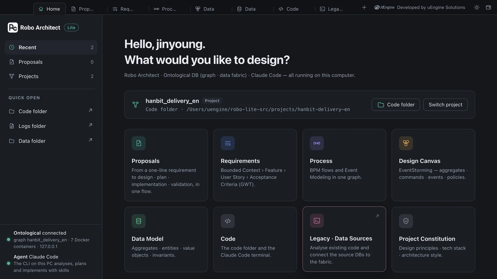
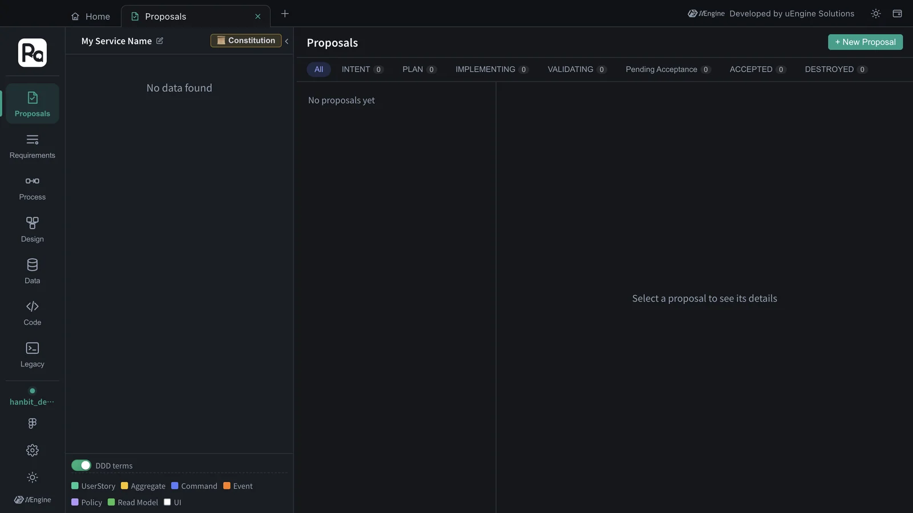
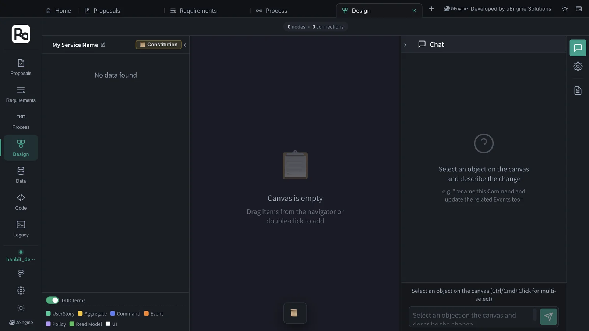
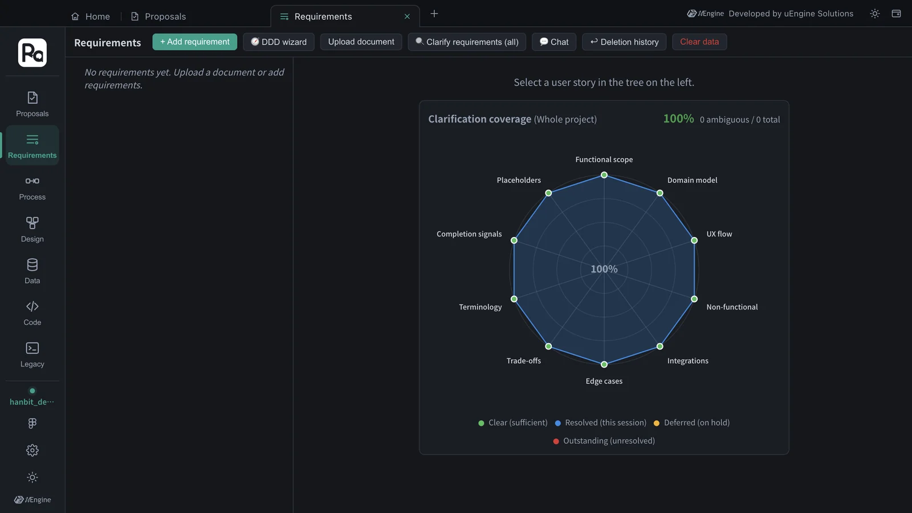
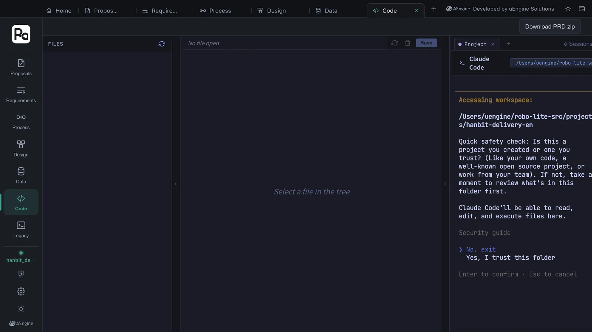
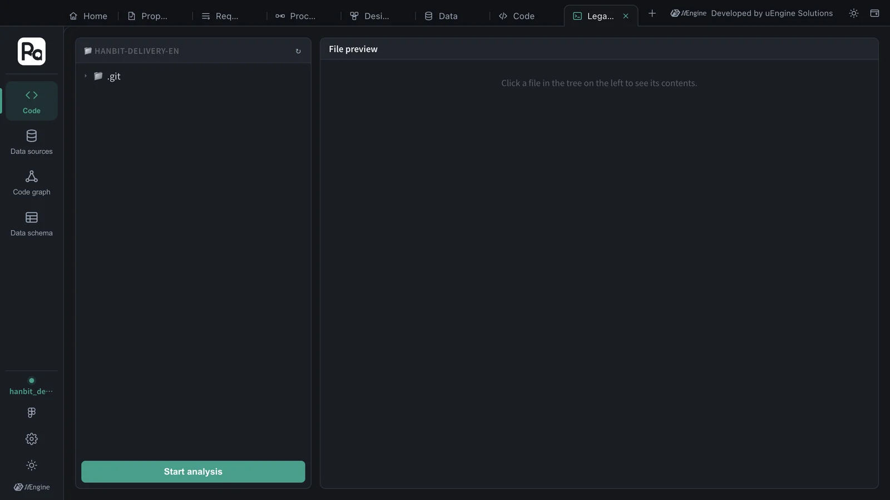

Take one lap around the tab strip at the top of the window, Home with its project and feature cards, and the seven screens the cards open as tabs (Proposals · Requirements · Process · Design · Data · Code · Legacy) to learn where you do what.
The window — tab strip and Home#
The Robo Architect window looks like a browser. The first tab on the tab strip at the top is Home; when you pick a feature on Home, that screen opens in a new tab. You can keep a proposal open and look at the design canvas in the tab next to it.

| On the tab strip | What it does |
|---|---|
| Home (⌘1) | The first screen, where you open a project and pick a feature |
| Work tabs | Screens opened from cards. Close with ✕ (⌘W); right-click for “Reload · Move to new window · Close tab · Close other tabs” |
| ＋ | Goes to Home (⌘T) |
| Right side | Developer credit, light/dark theme, new window (⌘N) |
Home has four parts.
- Open project — the project (graph) name and the code folder. Code folder opens that folder in Finder, and Switch project picks another project or creates a new one (Chapter 1).
- Eight feature cards — open the screens in the table below as tabs.
- List — this project's proposals and all projects. Clicking a proposal opens a new tab with that proposal.
- Status at bottom left — the graph DB (Ontological) connection and the agent (Claude Code).
Feature cards and screens#
| Card | Tab name | What you see | In this tutorial |
|---|---|---|---|
| Proposals | Proposals | One change = one proposal. The flow intent → plan → implement → validate → accept | Chapters 3–7 |
| Requirements | Requirements | A tree of bounded context › feature › user story › acceptance criteria (GWT) | Chapter 8 |
| Process | Process | Business flow (BPM) and Event Modeling | Chapter 8 |
| Design Canvas | Design | EventStorming canvas — aggregates, commands, events, policies | Chapter 8 |
| Data Model | Data | Entities, value objects, enumerations and invariants inside aggregates | Chapter 8 |
| Code | Code | Files in the code folder and a Claude Code terminal | Chapter 6 |
| Legacy · Data Sources | Legacy | Existing-code analysis, source DB connections (data fabric) | Chapter 11 |
| Project Constitution | Design | Constitution editor recording design principles, tech stack and architecture style | Chapter 4 |
Hands-on — open screens from the cards#
- On Home, click the Proposals card. The Proposals tab opens. There are no proposals yet, so you see “No proposals yet”.
- Click Home on the tab strip, and this time click the Design Canvas card. A Design tab opens as well.
- Open the remaining cards one by one too. You now have seven tabs.

The vertical strip on the left of an open screen is the rail. At the top is the Robo Architect mark, in the middle are the seven screens, and at the bottom are the current project's graph name and the Figma, settings and theme buttons. You can also switch screens inside one tab with the rail — use tabs to look at several screens side by side, and the rail to move around inside one tab. Only the Legacy tab is different — its rail shows just the Legacy menu (Code · Data sources · Code graph · Data schema), and clicking Legacy on another tab's rail takes you to the Legacy tab.



What Claude Code asks first in the Code tab
The first time Claude Code runs in a folder, the terminal in the Code tab asks whether you trust it (“Quick safety check: Is this a project you created or one you trust?”). Move to Yes, I trust this folder with the up and down arrows and press Enter. If this is also the first time Claude Code runs on this computer, it first asks you to pick a text color theme. Each question is asked only once.

Hands-on — working with tabs#
- Right-click a tab and choose Move to new window. The tab moves into a new window (as it is, without reloading).
- ⌘1 takes you to Home, and ⌘2 and up take you to the tabs in order. Ctrl+Tab goes to the next tab.
- Switch to the light theme with the sun button on the right of the tab strip. Home and every tab change together.
What to check#
- Screens opened from the cards on Home stack up as tabs.
- Each open screen has the rail on its left, with
hanbit_delivery_enat the bottom of the rail.
Quiz#
- You want to see the Proposals screen and the design canvas side by side. How do you do it?
- What opens when you click a proposal row in the list on Home?
Answers
- Open both as tabs, then right-click one tab, choose Move to new window, and place the two windows side by side.
- A new Proposals tab with that proposal selected.